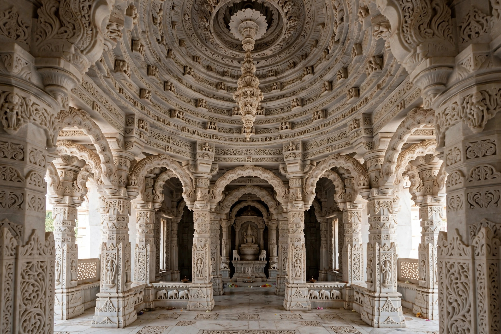

A Jain temple is the place of worship for Jains, the followers of Jainism. Jain temples range from small village shrines to vast marble complexes built by wealthy merchants, and are among the most richly decorated religious buildings in India. The deity enshrined is one of the tirthankaras, most often Mahavira, Parshvanatha, Rishabhanatha (Adinath) or Neminatha.

Temples built by the Svetambara tradition in western India are often of white marble carved with extraordinarily fine detail — ceilings with concentric rings of figures, delicate brackets and filigree-like screens. A typical layout includes the garbhagriha (sanctum), a pillared hall (mandapa) and porches, with the image of the tirthankara seated in meditation at the centre. Digambara temples are often plainer in ornament. Temple complexes also include libraries of Jain manuscripts and rest houses for pilgrims.
Jain worship centres on veneration rather than petition: devotees offer flowers, rice, sandalwood paste and lamps before the image, recite hymns and the Navkar Mantra, and meditate on the qualities of the liberated teachers. Non-violence (ahimsa) shapes temple practice, and many temples maintain animal shelters (panjrapols).